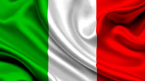

EUROPA
bulgaria
Bulgaria es una nación balcánica con un terreno diverso que rodea la costa del mar Negro, un interior montañoso y ríos, entre ellos el Danubio.
burgariachipre
La República de Chipre ocupa la parte sur de la isla de Chipre en el Mediterráneo oriental. La isla (y la ciudad capital Nicosia) se divide con Turquía al norte.
chiprealemania
alemania Alemania es un país de Europa occidental con un paisaje de bosques, ríos, cadenas montañosas y playas en el mar del Norte.
grecia
grecia Grecia es un país del sureste de Europa con miles de islas en los mares Egeo y Jónico.
italia
 italia Italia, país europeo con una larga costa mediterránea, influyó considerablemente en la cultura y la cocina occidental.
ASIA
catar
Catar, cuyo nombre oficial es Estado de Qatar, es un Estado soberano árabe ubicado en el oeste de Asia que ocupa la pequeña península homónima en el este de la península arábiga.
catarfilipinas
Filipinas es un país del sur de Asia en el Pacífico Occidental, que abarca más de siete mil islas.
 filipinas
filipinas
barein
Baréin, un país que abarca más de 30 islas en el golfo Pérsico, se encuentra en el centro de importantes rutas de comercio desde la antigüedad.
bareinbanglades
Bangladés, al este de la India en la bahía de Bengala, es un país sudasiático marcado por su abundante vegetación y sus numerosos canales.
bangladesarmenia
Armenia es un país y antigua república soviética en la región montañosa del Cáucaso entre Asia y Europa.
armeniaAFRICA
ruanda
Ruanda es un país sin litoral de África Oriental con un paisaje verde montañoso.
ruandasudafrica
Sudáfrica es un país del extremo más meridional del continente africano que se caracteriza por sus numerosos ecosistemas distintos.
egipto
Egipto, país que une el noreste de África con Medio Oriente, data del período de los faraones.
egiptoargelia
Argelia es un país de África del Norte con una costa en el Mediterráneo y un interior en el desierto del Sahara.
argeliaangola
Angola es un país sudafricano con terrenos variados que abarca playas tropicales en el Atlántico, un sistema laberíntico de ríos y el desierto subsahariano que se extiende por la frontera hasta Namibia.
angola
OCEANIA
australia
Australia es un país rodeado por los océanos Índico y Pacífico. Sus ciudades principales (Sídney, Brisbane, Melbourne, Perth y Adelaida) son costeras.
australia
nueva zelanda
Nueva Zelanda es un país en el suroeste del océano Pacífico, que comprende dos islas principales, ambas marcadas por los volcanes y la glaciación.
 nueva zelanda
nueva zelanda
reino unido
El Reino Unido, compuesto por Inglaterra, Escocia, Gales e Irlanda del Norte, es una nación insular del noroeste de Europa.
 reino unido
reino unido
meloanesia
Melanesia es una de las veintidós subregiones geográficas en que la ONU divide el mundo con fines estadísticos, y una de las cuatro pertenecientes a Oceanía.
 melanesia
melanesia
micronesia
son un Estado soberano insular en la región de Micronesia, cuya forma de gobierno es la república federal democrática.
micronesia
AMERICA
guatemala
Guatemala, un país de América Central al sur de México, tiene volcanes, bosques tropicales y antiguos sitios mayas.
guatemala
canada
Canadá es el país norteamericano que se extiende desde los Estados Unidos en el sur hasta el círculo polar ártico en el norte.
 canada
canada
belice
Belice es un país de la costa este de América Central, con riberas en el mar Caribe hacia el este y una selva densa al oeste. Frente a sus costas, la enorme Barrera del Arrecife de Belice, con cientos de islas bajas llamadas cayos, es hogar de una abundante fauna marina.
belice
cuba
El territorio está organizado en quince provincias y un municipio especial con La Habana como capital y ciudad más poblada.
cuba
dominica
Dominica es un país en una isla montañosa del Caribe con termas naturales y bosques tropicales.
dominica
europa
asia
africa
oceania
america
burgaria
chipre
alemania
grecia
italia
catar
filipinas
barein
banglades
armenia
ruanda
sudafrica
egipto
argelia
angola
australia
nueva zelanda
reino unido
meloanesia
micronesia
guatemala
canada
belice
cuba
dominica
guatemala
Guatemala, un país de América Central al sur de México, tiene volcanes, bosques tropicales y antiguos sitios mayas.
guatemalacanada
Canadá es el país norteamericano que se extiende desde los Estados Unidos en el sur hasta el círculo polar ártico en el norte.
canada
belice
Belice es un país de la costa este de América Central, con riberas en el mar Caribe hacia el este y una selva densa al oeste. Frente a sus costas, la enorme Barrera del Arrecife de Belice, con cientos de islas bajas llamadas cayos, es hogar de una abundante fauna marina.
belicecuba
El territorio está organizado en quince provincias y un municipio especial con La Habana como capital y ciudad más poblada.
cubadominica
Dominica es un país en una isla montañosa del Caribe con termas naturales y bosques tropicales.
dominica| europa | asia | africa | oceania | america |
|---|---|---|---|---|
| burgaria | chipre | alemania | grecia | italia |
| catar | filipinas | barein | banglades | armenia |
| ruanda | sudafrica | egipto | argelia | angola |
| australia | nueva zelanda | reino unido | meloanesia | micronesia |
| guatemala | canada | belice | cuba | dominica |